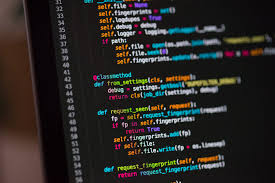

Although I always had the desire to build my physique, the beginning of my gym journey was largely influenced by my friends. They encouraged me to join, and for that, I will be forever grateful. I anticipated that it wouldn’t be easy, but it turned out to be even harder than I expected. It was during this time that I learned the importance of discipline in this journey. The gym has not only transformed my physique but also significantly boosted my confidence, self-esteem, focus, and mental well-being.The gym is not just a place to work out, it's a place to build your future.